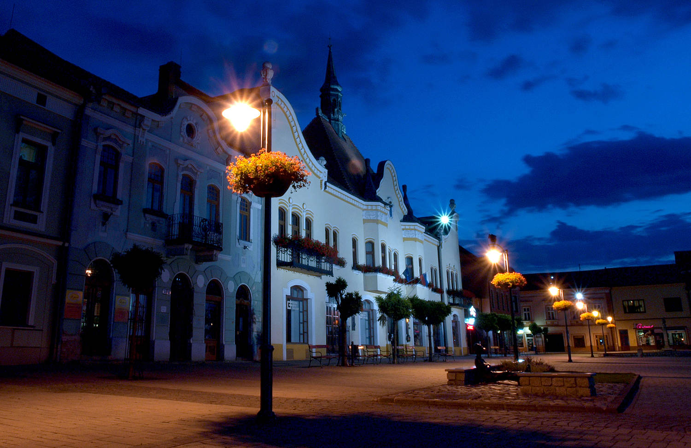

Topoľčany sú dynamické mesto nachádzajúce sa v Nitrianskom kraji, známe svojou bohatou históriou, priemyselným rozvojom a príjemným životným prostredím. S viac ako 25 000 obyvateľmi ponúka kombináciu historických pamiatok, kultúrnych podujatí a moderných služieb, vďaka čomu je atraktívnym miestom na život, prácu aj oddych. Mesto sa môže pochváliť krásnym historickým centrom, v ktorom nájdete dominantný Mariánsky stĺp, Kostol Nanebovzatia Panny Márie či zachované zvyšky Topoľčianskeho hradu v neďalekých Podhradanoch. Topoľčany sú tiež známe svojou pivovarníckou tradíciou a rozvinutým priemyslom, najmä v oblasti potravinárstva a strojárstva. Obyvateľom aj návštevníkom ponúka množstvo možností na voľnočasové aktivity – od športových areálov, cyklotrás, prírodných rezervácií v okolí rieky Nitry až po bohaté kultúrne podujatia. Topoľčany sú mesto s pohostinnou atmosférou, kde sa stretáva tradícia s moderným rozvojom, a vždy majú čo ponúknuť svojim obyvateľom aj turistom.
Mesto Topoľčany
Čo tu?


Topoľčiansky hrad Jeho romantická zrúcanina ponúka nádherný výhľad na okolie a príjemné prostredie na výlety.
Mestský ParkOddych v Mestskom parku ponúkajú príjemnú atmosféru na relax. V lete sa tu často konajú kultúrne podujatia a koncerty.
Šport a rekreáciaTopoľčany ponúkajú skvelé možnosti pre športovcov – cyklotrasy, bežecké chodníky či moderné športové areály. Okolie rieky Nitry je ideálne na nenáročné prechádzky alebo rybolov.
Naša primátorka
Ako nezávislá kandidátka bola znovuzvolená v komunálnych voľbách v októbri 2022, kde získala 4 892 platných hlasov. Vo svojej funkcii kladie dôraz na transparentnosť, komunikáciu s občanmi a rozvoj mesta vo všetkých oblastiach. Pod jej vedením sa realizovali viaceré projekty zamerané na modernizáciu infraštruktúry, podporu kultúry a športu či zlepšenie kvality života obyvateľov.